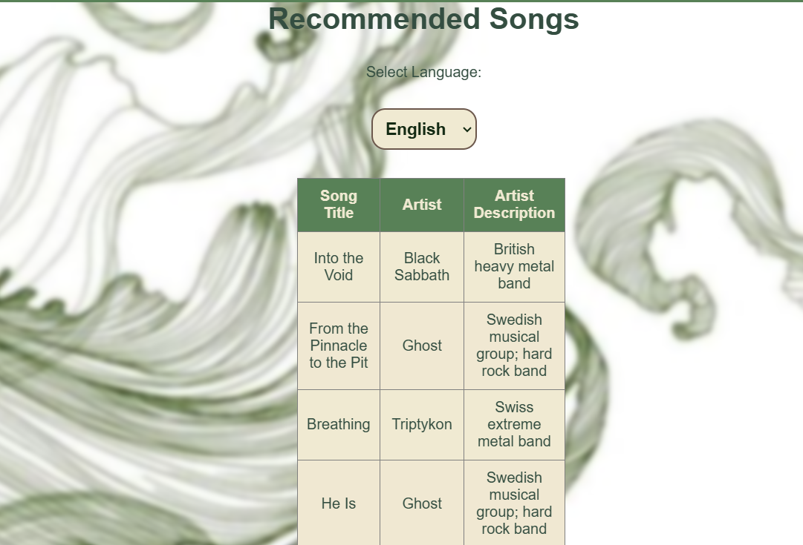

BiRt (Big Data Retriever)
Content
1. Introduction
1.1 Purpose of the Document
This document serves as a high-level guide for the development of the platform. Its purpose is to outline the scope, technical approach and overall goals for the project, including the intended features, technologies and use cases. It will also discuss the potential benefits of such a system and the challenges involved in building a robust and scalable data platform.
1.2 Target Audience and Suggestions
The target audience for this platform includes music enthusiasts, researchers, students, educators, developers, data scientists, and linguists. Music lovers can explore different genres, understand their influences, and discover recommended songs and artists. Researchers and musicologists can analyze the evolution of musical styles and cultural connections using linked open data. Students and educators can use the platform as an educational tool for studying music history and influences. Developers and data scientists working with SPARQL queries and Wikidata can leverage the system for research or software development. Additionally, linguists and translators can explore multilingual descriptions of artists and genres, gaining insights into how music-related information varies across languages.
The target audience for this project includes several groups of users. Among them are researchers working in data-intensive fields such as social sciences, humanities, and natural sciences, who need access to structured data and efficient querying mechanisms. The platform will also be aimed at developers and data engineers who will build, maintain, and scale the platform, working with tools like SPARQL and big data technologies. Additionally, it will serve data analysts interested in comparing and visualizing large datasets to derive useful insights. Finally, end users, who wish to explore specific topics such as artists, historical events, or geographical trends, will benefit from recommendations and insights across different languages.
1.3 Application Scope
The primary goal of the platform is to facilitate intelligent querying, comparison, and visualization of data from various domains available on Wikidata and related sources. The application will provide essential functionalities, such as a powerful SPARQL query engine, which will allow users to run complex queries on Wikidata to retrieve relevant data. It will also include comparison tools for large datasets across different domains, such as comparing artworks across different time periods or the influences of music styles on other genres. The platform will offer advanced data visualization features, which will help users quickly understand and analyze information through visual representations.
2. Overall Description
2.1 Product Perspective
BiRt (Big Data Retriever) is a web-based system that automatically retrieves and processes data about artists and music from Wikidata, generating visual charts. The application uses SPARQL queries to extract data about artists, albums, musical genres, and popularity metrics. The retrieved information is processed and automatically displayed as interactive charts using D3.js.
2.2 Product Functionalities
Discover Painters by Time Period, Country & Statistics
On the first page, users input:
- A start year and an end year to define the time period.
- A country to filter painters by their place of origin.
The application then retrieves and displays:
- A list of painters who were active in the selected period and country.
- Statistics on paintings, including:
- The number of paintings created by each painter in the list.
- A visual breakdown of artistic output within the selected time frame.
- Charts comparing the productivity of different painters.
Music Artists & Their Influences
The second page focuses on musical artists and their influences, allowing users to:
- Discover which artists influenced others, revealing direct artistic inspiration.
- Explore connections across different time periods and genres.
- View the relationships in an interactive network graph, making it easy to see how musical ideas spread between artists.
The data displayed on this page is randomly selected to encourage users to discover new artists and gain fresh insights. By presenting different artists each time, the platform fosters exploration and helps users uncover musical influences they might not have encountered otherwise.
Music Genre Influences
The third webpage allows users to explore the influences behind a selected music genre.
- The page displays which genres contributed to the development of the selected genre.
- Insights into the genre's evolution and stylistic roots are provided.
- If available, song recommendations from the selected genre are displayed.
- Users can discover new music while understanding genre connections.
2.3 Design and Implementation Constraints
2.3.1 Framework: Next.js
Next.js is a popular, open-source React framework used for building web applications with various rendering options. It offers a number of advantages that fit well with the needs of your application. Key Features:
- Server-Side Rendering (SSR): This means that pages are rendered on the server, and the fully generated HTML is sent to the browser, rather than relying on client-side JavaScript to generate the content. SSR is particularly useful for improving SEO and page load times. When a user requests a page, the server handles the rendering, and the page is ready to be displayed in the browser almost instantly.
- Static Site Generation (SSG): This is another rendering option that Next.js supports. SSG pre-renders pages at build time, allowing for fast load times and better performance when serving static content.
- API Routes: Next.js allows you to define API routes within the same project as your frontend. This means you don't need a separate backend server to handle data requests; Next.js can manage both the frontend and backend functionality. API routes in Next.js provide the ideal way to interact with Wikidata by running SPARQL queries directly from the application.
2.3.2 Data Handling: Next.js API Routes
Since Next.js combines both the frontend and backend in the same project, API routes act as internal backend endpoints that can manage server-side logic such as fetching data from external sources (like Wikidata) and processing it. These routes allow you to structure the backend logic without needing an independent backend framework.
- Seamless Data Fetching: API routes in Next.js allow you to handle complex queries to external data sources, like Wikidata, without the need for separate backend services. When a user interacts with the frontend, the API route is called to fetch data, process it, and send a response back to the frontend.
- Flexible Data Processing: Once data is fetched from Wikidata via SPARQL queries, it might need additional processing (e.g., calculating statistics, filtering data, or formatting it). API routes make it easy to process the data and format it according to the needs of the frontend.
2.3.3 Data Visualization: D3.js
D3.js is a powerful JavaScript library for creating data visualizations. It allows you to manipulate the DOM (Document Object Model) and bind data to elements on the page, enabling the creation of dynamic and interactive graphics, charts, and graphs.
- Customizable Visualizations: D3.js offers advanced features for creating highly customized charts and visualizations. This means that you can create complex, interactive visualizations like network graphs, bar charts, pie charts, or any other custom graphic that suits your data.
- Data Manipulation: D3.js excels at transforming data into visual elements, which is key when dealing with large datasets or requiring advanced manipulations (such as sorting, filtering, or grouping data).
2.3.4 Wikidata Interaction: SPARQL Endpoint
Wikidata is a large, open-source, structured knowledge base that stores data in RDF (Resource Description Framework) format. RDF data is ideal for representing complex relationships, which is why it’s commonly used for things like linked data, ontologies, and knowledge graphs. To query this data, you use SPARQL, a query language designed for querying RDF data. SPARQL allows you to retrieve specific information from Wikidata based on criterias.
- Efficient Data Retrieval : SPARQL is highly efficient at retrieving structured data from large datasets like Wikidata. You can filter and retrieve specific data based on the conditions you define in your queries.
- Flexibility in Querying: SPARQL allows for complex queries that can retrieve multiple types of information in a single query. For example, you can request data about an artist's works, the creation years of those works, and the artist’s country of origin all in one query.
- Integration with Wikidata: Wikidata’s SPARQL endpoint is publicly accessible, meaning that you can directly query the database from your application without the need for a separate data collection process.
2.3.5 Hosting & Deployment:
3. Architecture and Technical Aspects
3.1 System features & architecture
Fine Arts

Music
Music
Music Genre
Song recommendation
3.2 Data Flows
The application interacts with Wikidata through SPARQL queries to gather information about artists, their influences, and the evolution of music genres. Below, we will describe how data is retrieved, processed, and transmitted between the application's components:
3.2.1 User Inputs Data
The user initiates the search process by filling out a form on the frontend, where they can specify, based on the current webpage:
- Time range (Start Year and End Year) to filter the data.
- Country to filter artists by their place of origin (for painters).
- Music Genre or Artist to explore musical influences.
This data is sent to the backend via a HTTP request that includes the specified parameters for the SPARQL query.
3.2.2 API Request to the Backend
The backend (Next.js) receives the user's request and constructs the corresponding SPARQL query based on the user's input.
3.2.2.1 For Painters: If the user specifies a time period and a country, the backend will use the FINE_ARTS_QUERY_WITH_FILTERS query, which includes a filter for the start and end year, as well as the selected country. The query looks like this:
3.2.2.2 For Music Artists and Their Influences: If the user wants to see the influences of a specific music artist, the backend will use the MUSIC_INFLUENCES_QUERY, which searches for musical artists and their influences based on the region (e.g., artists from the United States):
3.2.2.3 For music genre influences:The backend uses the query GENRE_INFLUENCES_QUERY, which retrieves a list of music genres

3.2.2.4 In order to retrieve all the music genres that have the "influenced by" property:
The
backend uses the query MUSIC_GENRES_INFLUENCED_BY.
3.2.2.5 For exploring influences of a specific genre: The backend constructs a dynamic query using SELECT_GENRE_INFLUENCES_QUERY, where selectedGenre is replaced with the specific genre ID.
3.2.2.6 To provide the user with a list of regions (countries) to filter artists by: The backend uses the query REGIONS_QUERY.
3.2.2.7 To provide the user with some music recommendation based on the selected genre: The backend uses the query SONG_RECOMMENDATION_QUERY.
3.3 SPARQL Query to Wikidata
The backend sends the SPARQL queries to Wikidata. The queries are executed on the Wikidata server to retrieve the relevant data. For example:
- For painters, it searches for artists active within a time frame and from a specific country.
- For musicians, it searches for influences between artists and music genres.
3.4 Data Processing by the Backend
The backend receives the data from Wikidata and processes it:
- Filtering and Structuring: The backend will structure the data into a format that can be easily used by the frontend. For example, it will create a JSON object containing artists and their works.
- Charts: The backend can create charts, such as the total number of works per artist, to send them to the frontend.
3.5 API Response to the Frontend
After processing the data, the backend sends an API response to the frontend. This response contains:
- Structured data about artists and their works (for painters).
- Data about musical influences (for musicians).
3.6. Data Visualization on the Frontend
Once the processed data is received from the backend, the frontend presents it using tables and charts for a clear and interactive user experience. The visualization process is structured as follows:
4. RDF Model and Linked Data
The application retrieves structured data from Wikidata using SPARQL queries and represents it in RDF (Resource Description Framework) format. RDF enables the data to be linked, reusable, and queryable across different datasets.
4.1 Vocabulary/Ontology Used
The RDF model in this project leverages Wikidata's ontology and standard RDF vocabularies to describe entities and their relationships. The key ontologies and properties used include:
Core RDF Vocabularies & Prefixes
- wd: → Wikidata entities (e.g., wd:Q1028181 → Painter)
- wdt: → Wikidata direct properties (e.g., wdt:P106 → Occupation)
- rdfs: → RDF Schema (for labels and descriptions)
- xsd: → XML Schema for data types (e.g., date formatting)
Key Wikidata Properties Used
4.2 Example RDF Model
Example 1: RDF Representation of a Painter and Their Artwork
@prefix wd: <http://www.wikidata.org/entity/> .
@prefix wdt: <http://www.wikidata.org/prop/direct/> .
@prefix rdfs: <http://www.w3.org/2000/01/rdf-schema#> .
@prefix xsd: <http://www.w3.org/2001/XMLSchema#> .
wd:Q5592 a wd:Q1028181 ; # Leonardo da Vinci is a Painter
wdt:P27 wd:Q38 ; # Country: Italy
rdfs:label "Leonardo da Vinci"@en .
wd:Q12418 a wd:Q3305213 ; # Mona Lisa is an artwork
wdt:P170 wd:Q5592 ; # Created by Leonardo da Vinci
wdt:P571 "1503"^^xsd:gYear ;
rdfs:label "Mona Lisa"@en .
Example 2: RDF Representation of Music Influences
@prefix wd: <http://www.wikidata.org/entity/> .
@prefix wdt: <http://www.wikidata.org/prop/direct/> .
@prefix rdfs: <http://www.w3.org/2000/01/rdf-schema#> .
wd:Q1299 a wd:Q639669 ; # The Beatles are musicians
wdt:P136 wd:Q11399 ; # Genre: Rock
wdt:P737 wd:Q107597 ; # Influenced by Chuck Berry
rdfs:label "The Beatles"@en .
wd:Q107597 a wd:Q639669 ; # Chuck Berry is a musician
wdt:P136 wd:Q11399 ; # Genre: Rock
rdfs:label "Chuck Berry"@en .
5. User Documentation
5.2 Routes
The application uses the following routes for navigation:
- / (Home Page) – Provides an introduction to the application and instructions on how to use it.
- /finearts (Painters & their works) – Allows users to input a start year, end year, and country to retrieve a list of painters and their works.
- /music (Music Artists & Their Artist Influences) – Displays musical artists and their influences in an interactive graph.
- /music_genres (Music Genre Influences) – Visualizes how music genres influenced each other over time, along with song recommendations, if available.
6. Conclusions and Future Work
6.1 Conclusions
This application successfully retrieves and visualizes data about painters, musical artists, and genre influences from Wikidata using SPARQL queries. By leveraging Next.js for both the frontend and backend, it ensures fast performance through server-side rendering (SSR) and API routes.The key achievements of this project include:
- Efficient data retrieval using Wikidata’s structured knowledge base.
- User-friendly interface for exploring artists and their influences.
- Dynamic data visualization using Chart.js and D3.js for insights.
- Seamless navigation with Next.js routing and state management.
This application provides valuable insights into the evolution of art and music, making complex data more accessible to users.
6.2 Future Directions
Although the application is functional and provides useful visualizations, several areas can be improved or expanded in future iterations:
6.2.1. Enhanced Data Filtering & Customization
- Allow users to refine searches using additional filters, such as art style, movement, or music era.
- Enable real-time search suggestions based on Wikidata’s extensive dataset.
6.2.2. Improved Data Visualizations
- Introduce interactive visualizations with zoom, pan, and filtering options.
- Implement 3D network graphs to enhance artist influence visualization.
6.2.3. Expanded Data Sources
- Integrate other open data sources (e.g., MusicBrainz, DBpedia) for more comprehensive results.
- Provide cross-referenced data between multiple knowledge bases.
6.2.4. User Authentication & Personalization
- Allow users to save searches and favorite artists.
- Implement user accounts to track preferences and generate personalized recommendations.